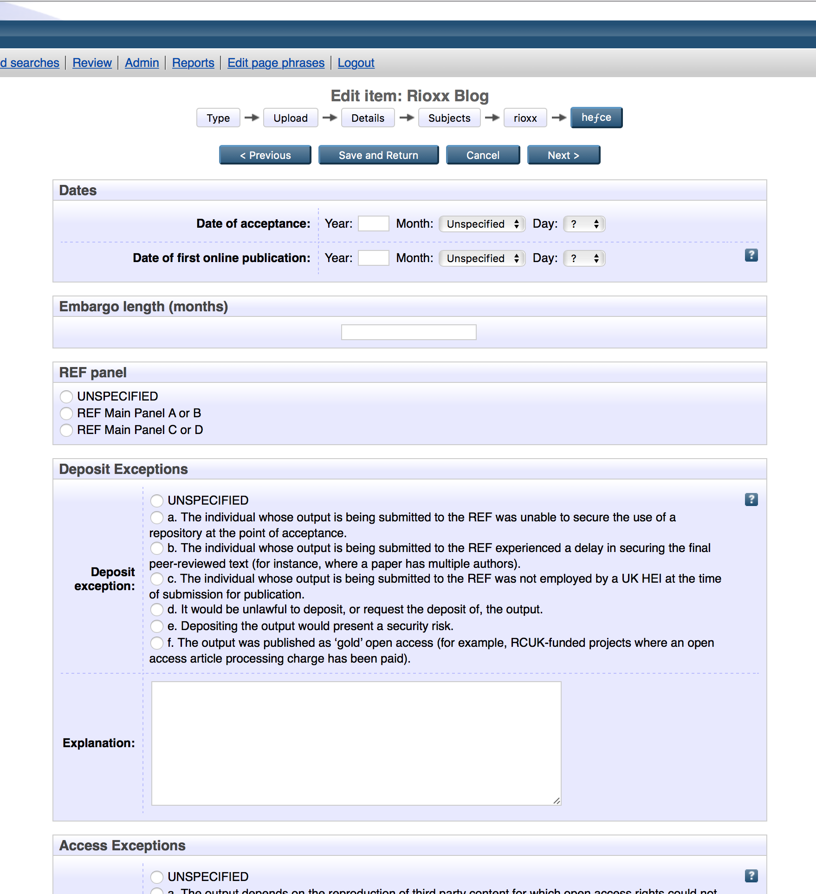
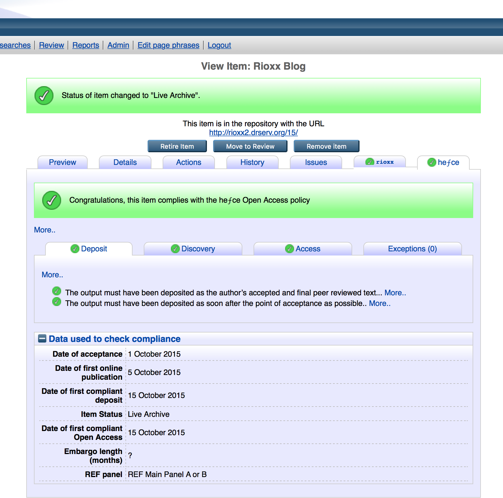
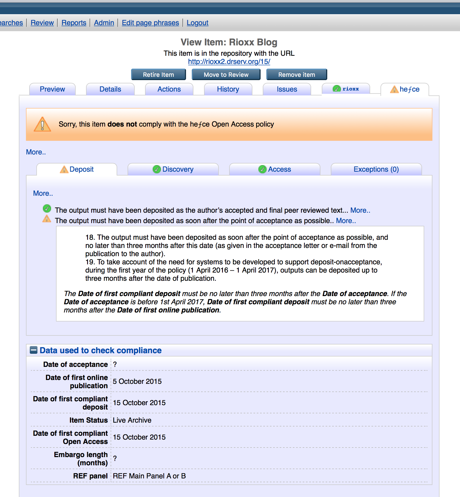

REF Compliance Checker for EPrints
Introduction
The REF Compliance Checker plugin for EPrints has been developed to help your institution comply with the Open Access policy of the UK HE Funding Bodies. The key points of the policy are shown below; the full details may be accessed here.
- The policy states that, to be eligible for submission to the post-2014 REF, authors’ outputs must have been deposited in an institutional or subject repository. Deposited material should be discoverable, and free to read and download, for anyone with an internet connection. The requirement applies only to journal articles and conference proceedings with an International Standard Serial Number. It will not apply to monographs, book chapters, other long-form publications, working papers, creative or practice-based research outputs, or data. The policy applies to research outputs accepted for publication after 1 April 2016, but we would strongly urge institutions to implement it now.
- The policy allows repositories to respect embargo periods set by publications. Where a publication specifies an embargo period, authors can comply with the policy by making a ‘closed’ deposit. Closed deposits must be discoverable to anyone with an Internet connection before the full text becomes available for read and download (which will occur after the embargo period has elapsed). If still under embargo at the submission date of the next REF, closed deposits will be admissible to the REF.
- The output must have been deposited as soon after the point of acceptance as possible, and no later than three months after this date (as given in the acceptance letter or e-mail from the publication to the author).
- There are a number of exceptions to the various requirements that will be allowed by the policy. These exceptions cover circumstances where deposit was not possible, or where open access to deposited material could not be achieved within the policy requirements. These exceptions will allow institutions to achieve near-total compliance, but the post-2014 REF will also include a mechanism for considering any other exceptional cases where an output could not otherwise meet the requirements.
The REF Compliance Checker for EPrints
The purpose of the REF Compliance Checker is to smooth the process by which EPrints-using institutions can establish in a straightforward fashion whether an article or conference proceeding with an ISSN produced by a member of their organisation is eligible for the post-2014 REF. To do this effectively, the checker requires some metadata describing key facts such as the date of acceptance and the version type. The relevant metadata need to be checked against a set of logical rules that faithfully represent the requirements laid down in the Open Access policy of the UK Higher Education Funding Bodies. To enable this process some new terminology has been devised including “date of first compliant deposit”, “version of first compliant deposit” and “date of first compliant Open Access”. These, together with the other metadata required to ascertain eligibility, are described in more detail below.
Metadata and terminology
Date of first compliant deposit (FCD)
An item will be considered a compliant deposit if (a) it is in the Review or the Live Archive area of the repository and (b) it has the Accepted or Published version of the full text manuscript attached. The FCD metadata reflects the date that the item first met this criteria - for example when the item was submitted to the review section of the repository by the researcher, or when the accepted version of the full text was subsequently uploaded by an editor to the live side of the repository.
Once the Date of FCD is set, subsequent changes to the item will not affect it. The Date of FCD will be copied to any new versions created using the "New Version" option. The new version will effectively "inherit" the same Date of FCD as the previous version. The behaviour of the Date of FCD field in different circumstances is outlined in the table below.
Researcher makes compliant deposit
Date of FCD set when researcher clicks "Deposit Now"
Researcher makes non-compliant deposit; editor subsequently uploads Accepted version of full text during review to make deposit compliant Date of FCD set when editor uploads Accepted version
Compliant deposit in Live Archive - editor augments item by attaching the Published version
Date of FCD unchanged
Compliant deposit in Live Archive - editor replaces Accepted version of full text with Published version
Date of FCD unchanged
Compliant deposit in Live Archive - researcher selects "New Version" option, attaches the Published version of the full text to the new version and deposits it Date of FCD copied to new version
Version of first compliant deposit (FCD)
The Version of FCD automatically records the version of the full text that was present when the Date of FCD was recorded.
Version(s) present Version of FCD Accepted only AM Published only VoR Accepted and published VoR
These version terms are adopted from the RIOXX V2 Application Profile.
Once the Version of FCD is set, subsequent changes to the item will not affect it. The Version of FCD will be copied to any new versions created using the "New Version" option - the new version will effectively "inherit" the same Version of FCD as the previous version.
Date of first compliant Open Access (FOA)
The Date of FOA automatically records the date that a compliant deposit was first made Open Access - that is, the date that the Accepted or Published version of the full text attached to the deposit was first made publicly available. For example this could be the date that the item was made live (discoverable) or when an embargo period expired.
Once the Date of FOA is set, subsequent changes to the item will not affect it. The Date of FOA will be copied to any new versions created using the "New Version" option - the new version will effectively "inherit" the same Date of FOA as the previous version.
Date of acceptance
The date that the item was first accepted for publication.
Date of first online publication
The date that the item was first published online Embargo length
The length (in months) of any embargo affecting access to the Accepted or Published version. Note that the Open Access policy stipulates acceptable embargo lengths.
Target REF panel
The panel that the item is likely to be submitted to in the post-2014 Research Excellence Framework.
Exceptions
Any deposit, access, technical or other exceptions that apply to the item.
How the OA Compliance Checker works
Using the metadata described above, the OA Compliance Checker plugin carries out a number of tests to determine compliance. These tests are carried out whenever the item is changed, so the updated compliance status is immediately reflected.
Overall compliance
To be compliant, an item must meet at least one of the following conditions:
- The deposit, discovery and access requirements are met.
- There is a deposit exception.
- There is an access exception and the deposit and discovery requirements are met.
- There is a technical exception.
- There is an 'other' exception.
Deposit requirements
To be deposit compliant, all of the following conditions must be met.
- The Date of first compliant deposit must be set (i.e. the item is a compliant deposit).
- The Date of first compliant deposit must be no later than three months after the Date of acceptance. If the Date of acceptance is before 1st April 2017, Date of first compliant deposit must be no later than three months after the Date of first online publication.
Discovery requirements
To be discovery compliant, all of the following conditions must be met:
- The item must be in the Live Archive.
Access requirements
To be access compliant, all of the following conditions must be met.
- If no embargo applies, the Date of first compliant Open Access must be less than one month after the Date of first compliant deposit. Otherwise, the Date of first compliant Open Access must be less than one month after the embargo expiry date (Date of first online publication + Embargo length (months).
- The Embargo length (months) must not exceed the stated maxima for the target REF panel.
Other criteria
All other criteria are determined to be already met or not necessary to explicitly check at the software level.
Using the REF Compliance Checker plugin
The test (beta) version of the REF Compliance Checker is designed to be self-contained and should not, therefore, affect the operation of your existing repository. The next version will be adapted to integrate with the Dates and RIOXX plugins. At a later point in time there will be further integration between the REF Compliance Checker and the established REF plugin, but further details are required from the Funding Bodies before that can be done.
The REF Compliance Checker will be able to produce reports showing by year which items are eligible for the REF. In order to enable this feature, the Generic Reporting Framework will need to be installed from the Bazaar (Generic Reporting Framework version 1.0.0). This same package is also required for the RIOXX plugin.
Installation
The REF Compliance Checker plugin is available via the EPrints Bazaar. This is accessed from the “System Tools” tab on the Admin screen. A Bazaar package is normally installed by clicking the “Install” button next to a package displayed on the “Available” tab.
Changes to the workflow

In the workflow (the boxes along the top of the screen) there is a new stage here denoted “hefce” (though the final version will probably say REF CC in recognition of the fact that all the UK’s Higher Education Funding Bodies have adopted the Open Access policy for which this plugin is designed.
Working with the REF Compliance Checker plugin
It is important when depositing an item that the content is correctly specified: the drop down list associated with the Content field, found in the optional section of the Upload stage of the workflow, enables the depositor to identify an item as being Accepted or Published. The REF Compliance Checker plugin refers to this information to help establish whether an item is eligible for the REF. In view of that, the repository administrator may choose to consider whether the Content field should become mandatory.

The REF Compliance Checker metadata entry page is relatively straightforward. For the test version only there is the facility to enter date of acceptance and date of first online publication. This is to enable the test version to be self-contained and not reliant on certain key metadata being entered elsewhere. In the final version this box will probably disappear since the dates metadata will be picked up automatically from earlier points in the workflow. The same may also hold true for the Embargo field.
The depositor may select a REF panel if appropriate; this is important because the maximum allowable embargo period differs according to the REF panel selected.
A number of deposit, access, technical and other exceptions are permitted and the plugin enables one or more of these to be selected as appropriate. Note that there is no way in EPrints to deselect a radio button once it has been selected. If a depositor selects an exception in error, this can be corrected by selecting the UNSPECIFIED radio button.

Once a record has been deposited, the REF Compliance Checker plugin will then perform its logic-based tests on the metadata that has been supplied. The next screen provides an example of a record that is compliant with the Open Access policy. The plugin clearly indicates which data have been used to check compliance with the various different aspects of the policy: deposit; discovery; access or whether any exceptions have been claimed.

Where a record is ineligible, the plugin will indicate where the deficiency lies. In some cases it may be, for instance, that a key date is missing, the embargo length exceeds the maximum allowed under the policy or the status of the item has not been established.
In the case depicted by the screen shot below, the deposited does not comply with the Open Access policy because it does not fully comply with the deposit rules. Clicking the “More” link provides a detailed account of what the rules are with regard to achieving compliance and by expanding the area under the heading “Data used to check compliance” it is clear that the Date of acceptance is missing.
